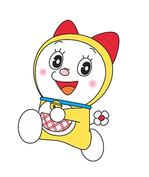
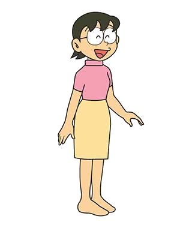
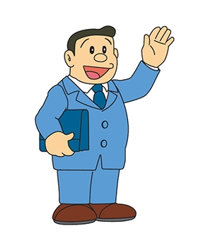
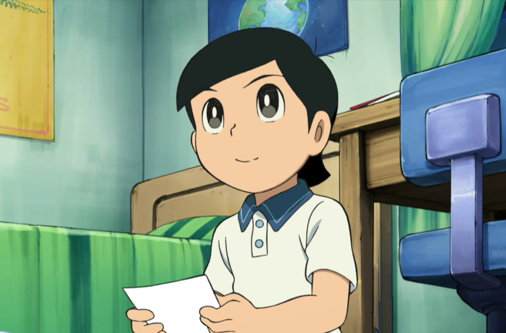
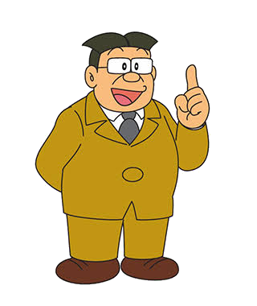
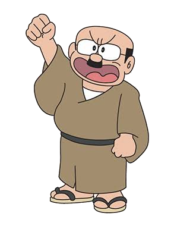
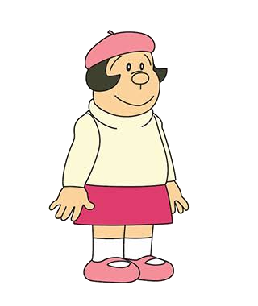
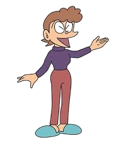
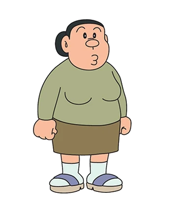

哆啦A夢
主角 · 機器貓來自22世紀的藍色機器貓型機器人，由大雄的孫子派遣到過去陪伴幼年大雄。雖然擁有無數高科技道具，卻異常怕老鼠，更因此失去了雙耳。個性溫和、重情義，最愛吃銅鑼燒。

野比大雄
主角 · 小學生哆啦A夢的主人，讀小學四年級。成績差、運動差，幾乎樣樣倒數。唯一強項是0.93秒瞬間入眠，以及意外精準的射擊技術（彈弓）。雖然懦弱依賴，但內心善良，關鍵時刻往往展現令人意外的勇氣。台灣版改名「葉大雄」。

靜香
女主角大雄的鄰居兼暗戀對象，學業優秀、個性溫柔體貼，是朋友群中的理性代表。熱愛拉小提琴，但琴技奇差，每次演奏都讓鄰居苦不堪言。最喜歡泡澡，並以此聞名。長大後嫁給大雄。

胖虎
霸主 · 天下第一本名剛田武，自封「天下第一好漢」，慣以蠻力欺負大雄與小夫。但在電影版中往往展現出俠義勇敢的一面，是關鍵時刻最可靠的隊友。最大愛好是舉辦演唱會，儘管歌聲讓人痛不欲生。台灣版名「吳健安」。

小夫
富家子 · 馬屁精本名骨川小夫，家境富裕，父親是大企業董事。慣於炫耀新玩具、旅遊經歷和媽媽的廚藝。是胖虎的跟班，常一起欺負大雄。但實際上才能出眾：擅長縫紉、繪畫、製作精巧模型，電影版中是不可或缺的智囊。

哆啦美
哆啦A夢之妹哆啦A夢的妹妹，黃色機器貓。雖然製造序號比哥哥晚，但因為喝了品質更高的機器油，能力反而更強、更聰明。不怕老鼠，但怕蟑螂。最愛吃哈密瓜麵包。個性直爽，常對哥哥的行事方式感到無奈。

大雄的媽媽
家庭主婦全名野比玉子，嚴厲但深愛大雄的媽媽。每次大雄考試零分或惹麻煩，必然大聲斥責追打。廚藝出色，是家中的實際掌舵者。

大雄的爸爸
上班族全名野比則雄，溫和親切的上班族父親。常為大雄說情，是家中的緩衝劑。興趣是攝影和圍棋。某些電影版中有他與大雄之間的深刻情感故事。

出木杉
天才資優生班上的全能天才，成績、運動、才藝樣樣第一，更是靜香暗地傾心的對象。個性謙遜，從不欺負人。台灣版改名「王聰明」，名字直白反映角色特質。

大雄的班導師
小學老師大雄的班導師，嚴厲但盡責。大雄幾乎每次考試都零分，讓老師忍不住三天兩頭打電話通知家長。雖然常對大雄發火，但心底仍盼望這個學生能有朝一日振作。

神成先生
空地旁的大叔住在空地旁的老爺爺，以愛生氣聞名。孩子們玩球時，球只要一落進他的院子，他立刻暴跳如雷出來抗議。雖然脾氣火爆，卻是大雄他們成長過程中不可或缺的「鄰居背景」，有時也默默展現出一點善意。

小珠（胖虎妹妹）
夢想漫畫家胖虎的妹妹，立志成為漫畫家，創作出各種情節怪異的作品。繼承了哥哥的外貌特徵，但個性善良純真。在某些故事版本中，大雄差點和她訂婚，是個令大雄既敬畏又同情的存在。台灣版名「小珠」。

小夫的媽媽
富裕太太小夫的媽媽，外貌優雅，出身上流。小夫每次炫耀「我媽媽做的XX好好吃」幾乎都是她的廚藝。她對小夫極為溺愛，是他過度依賴媽媽個性的根源，偶爾也會出現在故事中。

胖虎的媽媽
店老闆娘剛田家雜貨文具店的老闆娘，也是整個哆啦A夢世界最令胖虎恐懼的存在。連天下第一好漢的胖虎，看到媽媽拿掃帚追來也立刻落荒而逃。她的出現往往意味著胖虎闖了什麼大禍。
藤子・F・不二雄
哆啦A夢的父親。生於富山縣高岡市，1996年9月23日因慢性腎衰竭辭世，享年62歲。與安孫子素雄共組「藤子不二雄」搭檔出道，1992年各自獨立後以「藤子・F・不二雄」名義持續創作。哆啦A夢共出版45卷正式單行本，全球累計銷量逾2.5億冊，是日本史上最暢銷的漫畫之一。他以溫柔而不說教的方式，將科幻與日常生活完美融合。
藤子不二雄Ⓐ
藤子・F・不二雄的長年創作夥伴，故鄉為富山縣冰見市。兩人在富山相識，共以「藤子不二雄」名義出道。以《忍者哈特利》（忍者ハットリくん）、《笑面男》（笑うせぇるすまん）等作品聞名。1992年拆夥後各自獨立。